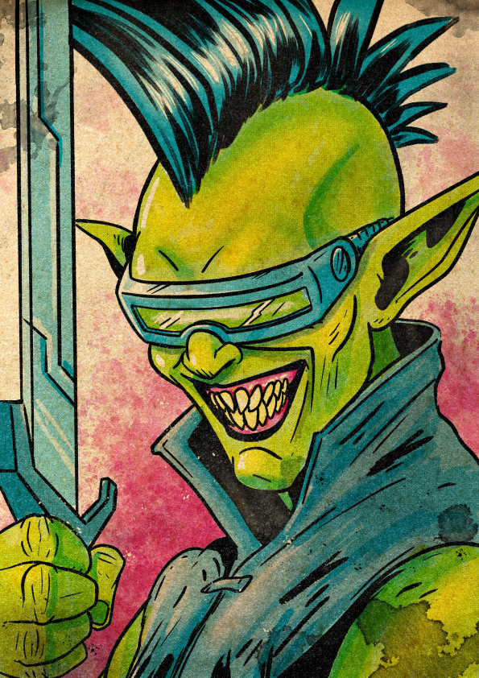

Krellen-Jek is a kuran'zoi — what the lower worlds, looking at advanced technology and concluding the obvious wrong thing, call a "Time Raider." The kuran'zoi liberated themselves from the synliroi during the First Psychic War and have lived since as nomads of the timescape. He learned to fight on a ship, took to it well enough to be useful and badly enough to want out, and walked off a raid one day in the chaos. He has not been back.
His class is Tactician: he leads from the line. He marks a target, his squad reads the signal, the squad converges. He is built around making the people next to him better at their jobs. His subclass is Insurgent — he does not fight fair; he expects the enemy to fight fair and finds that a useful asymmetry. The party is his new crew, whether they know it or not, whether he admits it or not.
In Alloy, he is the most operationally useful prisoner in the cell. He sees what the other characters do not. He will also be the first to suggest something the other characters do not want to do.
The Tactician's primary characteristics are Might and Reason, and Krellen-Jek maxes both. The −1 Intuition is the read he can't make — he doesn't catch what people don't say out loud. The plan is clean, the orders are sharp, the squad moves on a single beat; what gets missed is whatever the silent one in the back was thinking about doing all along.
| Stat | Value & Source |
|---|---|
| Size | 1M — medium |
| Speed | 8 — 5 base + 2 (Dual Wielder) + 1 (Raider) |
| Disengage | 3 — 1 base + 1 (Dual Wielder) + 1 (Raider) |
| Stability | 0 |
| Melee Damage Bonus | +2 / +2 / +2 (Dual Wielder) or +1 / +1 / +1 (Raider) |
| Ranged Distance / Damage | +5 distance, +1/+1/+1 damage — Raider kit (Dual Wielder is melee-only) |
| Damage Immunity | Psychic 1 (= level) — kuran'zoi Psychic Scar |
| Wealth | 1 |
| Renown / XP / Hero Tokens | 0 / 0 / 0 |
Field Arsenal lets him use and gain the benefits of two kits. The Draw Steel rule that stamina bonuses from kits stack is reflected here (21 + 6 + 6 would be 33, but conservatively shown as 27 = 21 + 6 single-kit bonus). Stamina total to be verified against the Field Arsenal rules — depending on the ruling, his Stamina is either 27 or 33. The speed and disengage figures show both kits applying their bonuses in parallel.
The Tactician's heroic resource is Focus: a measure of how attentively his squad is tracking his calls. Focus accrues on his turn, when his marked target takes damage, and when his allies cut loose with heroic abilities nearby.
| Trigger | Gain |
|---|---|
| Start of your turn | +2 |
| First time each round that you or an ally damages a creature you have marked | +1 |
| First time in a round that an ally within 10 squares of you uses a heroic ability | +1 |
Focus rewards a working squad. The more his allies act decisively — especially against the target he has marked — the more he has to spend buying them edges, signature ability triggers, surges, and follow-up attacks. The resource is a feedback loop: the better the team is playing his game, the more game he can run.
The kuran'zoi (called time raiders by lower-world peoples who can't tell advanced tech from time travel) carry the psychic scars and adaptations of an ancestry built originally as servitors to god-like psions. Krellen-Jek has the racial baseline and two trait selections.
| Trait | Function (verbatim) |
|---|---|
| Psychic Scar (baseline) | Your mind is a formidable layer of defense. You have psychic immunity equal to your level. (At level 1: psychic immunity 1.) |
| Beyondsight | You adjust your vision to allow you to see through mundane obstructions. |
| Unstoppable Mind | Your mind allows you to maintain your focus in any situation. |
The Tactician is strategist, defender, and leader — sword in hand, allies inspired, threats taunted into bad decisions. Krellen-Jek's class features form the spine of the dossier.
The target is marked by Krellen-Jek until the end of the encounter, until he is dying, or until he uses this ability again. He can willingly end his mark on a creature (no action required). If another tactician marks the creature, his mark ends. When a creature marked by him is reduced to 0 Stamina, he can use a free triggered action to mark a new target within distance.
He can initially mark only one creature using this ability, though other tactician abilities allow marking additional creatures at the same time.
While a creature marked by him is within his line of effect, he and allies within his line of effect gain an edge on power rolls made against that creature.
Choose one of the following benefits:
He can't gain more than one benefit from the same trigger.
The target can use a signature ability as a free triggered action.
Spend 5 Focus: Target two allies instead of one.
| Feature | Function |
|---|---|
| Stamina | 21 at level 1 (+9 per level thereafter) |
| Recoveries | 10 |
| Heroic Resource | Focus (see Section III) |
| Class Skills | Lead; plus Monsters and Brag |
Krellen-Jek's combat identity is the Mark loop. The pieces interlock:
His subclass adds Covert Operations on top: while in his presence or working according to his plans, allies gain an edge on tests using Intrigue skills, and he can use the Lead skill to assist any Intrigue test. The Mark loop is the combat machine; Covert Operations is the same machine, applied to anything the squad does outside combat. Same shape, different metric.
From the subclass description: "Doing your duty, playing fair, and dying honorably in battle is your opponent's job. You'll do whatever it takes to keep your allies alive."
While in his presence or working according to his plans, each of his allies gains an edge on tests using any skill from the Intrigue skill group. Additionally, he can use the Lead skill to assist another creature with any test made using a skill from the Intrigue group.
At the Director's discretion, he and his allies can use skills from the Intrigue skill group to attempt research or reconnaissance during a negotiation instead of outside of a negotiation.
The target gains 2 surges, which they can use on the triggering damage.
Spend 1 Focus: If the damage has any potency effect associated with it, the potency is increased by 1.
Insurgent grants one additional Intrigue skill: Conceal Object.
The Tactician's Level 1 feature Field Arsenal grants two kits, with both signature abilities available. Krellen-Jek runs Dual Wielder and Raider in parallel.
| Stat / Bonus | Value |
|---|---|
| Weapon | Light Weapon, Medium Weapon |
| Armor | Medium Armor |
| Stamina | +6 |
| Speed | +2 |
| Disengage | +1 |
| Melee Damage | +2 / +2 / +2 |
| Stat / Bonus | Value |
|---|---|
| Weapon | Light Weapon |
| Armor | Light Armor, Shield |
| Stamina | +6 |
| Speed | +1 |
| Disengage | +1 |
| Ranged Distance | +5 |
| Melee Damage | +1 / +1 / +1 |
| Ranged Damage | +1 / +1 / +1 |
Dual Wielder is the close-in finisher — two strikes per main action with a maneuver and movement sandwiched between. Raider is the flexible reach — melee or ranged with a 5-square option, plus a debuff on the target. Together they let Krellen-Jek be wherever the fight is: in the press, drawing both blades; or at distance, throwing one with a shield on his off arm. The kit choice is moment-to-moment.
The Tactician does not pick a signature class ability — the kit signatures serve that role. Krellen-Jek's class ability selections are at the 3-Focus and 5-Focus tiers.
Each target can move up to their speed.
The two picks complement each other and the Mark loop. Squad! Forward! is movement for him plus two allies — set the positions before the engagement. Hammer and Anvil is the engagement: his strike triggers free signature strikes from one or two allies, all rolling against his marked target (with an edge from Mark), all dealing damage that ticks Mark: Trigger benefits. A tier-3 Hammer and Anvil can produce three damage rolls against the same target in a single action.
| Element | Choice & Note |
|---|---|
| Environment | Nomadic — a culture that travels from place to place to survive. (Skill: Drive.) |
| Organization | Communal — all members of the culture considered equal. (Skill: Gymnastics.) |
| Upbringing | Martial — raised by warriors. (Skill: Strategy.) |
| Language | Voll |
"You worked on a ship that might have been a merchant cog, a mercenary or military craft, or a pirate vessel. You might have been a deckhand, a mate, or even the captain."
The most Krellen-Jek perk in the game. The Tactician's job is to make allies be in the right place; the perk is to literally throw them there. Limit: once per "Victories earned" cycle. Use it well.
Caelian (default), Voll (culture), Low Kuric (career), Urollialic (career).
The .ds-hero source records Gymnastics from the Communal organization choice, with the choice listing it among Crafting/Exploration options. Gymnastics is filed under Exploration in the standard skill list — but appears here per the source data. Worth a player check that this is the intended pick.
From the Draw Steel complication: "You used to be a villain. You're (mostly) reformed now, but in desperate moments, you sometimes draw on the rage and hatred that fueled your old life. In those moments, even your friends aren't sure whose side you're on. They don't need to worry, though. Once you leave evil behind, you can't go back. You've made too many enemies on the other side."
| Aspect | Effect |
|---|---|
| Antihero Benefit | You have 3 antihero tokens. Whenever you use an ability or effect that costs your Heroic Resource, you can spend 1 antihero token to in place of 1 Heroic Resource. While you have fewer than 3 antihero tokens and you would earn a hero token for your party through your deeds, you instead regain 1 antihero token. |
| Antihero Drawback | While you have fewer than 3 antihero tokens, you exude a villainous aspect. You and each ally within 5 squares of you takes a bane on all tests made to interact with other creatures. |
The complication runs an alternate currency loop alongside the Hero Token pool. Three tokens at start; spending one trades for Heroic Resource (no Focus paid). Whenever the party would earn him a Hero Token through his deeds, he regains an antihero token instead — provided he is below 3. Below 3 tokens, he and every ally within 5 squares takes a bane on social tests. The mechanical question for play becomes: how often is the social cost worth the resource flexibility? Holding all 3 tokens removes the drawback entirely but means the conversion option never gets used.
From the Draw Steel inciting incident: "It was in the middle of a pirate raid (whether you were part of it or targeted by it) that you realized you no longer yearned for a sailor's life. You used the chaos of the moment to slip away unnoticed. You now work as a hero in an effort to either end the piracy of others or atone for your past deeds, but you fear the day your old crew finds you and punishes you for your desertion."
The inciting incident is explicit that the raid could have gone either way — Krellen-Jek may have been the raider, may have been the raided. The text leaves which one undetermined, and the Antihero complication's flavor ("you used to be a villain") leans toward the former. Either way: there is a crew that will, in time, come for him. The campaign roster identifies him as "a deserter hunting his old crew — being baited toward confrontation." The hunt is two-directional.
The following is drawn from the Collateral campaign summary, which is explicitly marked as draft / provisional. Details are subject to change in Session Zero.
The premise: the player characters wake in the same holding cell in Alloy, the Free City of Brass, and are told "The debt has defaulted. You belong to the Saffron Seal now." Krellen-Jek wakes up well-suited to the situation in the abstract — he is a Tactician, this is the kind of operational scenario he was built for — and badly suited to it in the specific: he was, until recently, evading capture by a former crew, and now he is being held against his will by another organization that knows where he is.
Combat: force multiplier and damage broker. The Mark loop makes everyone else hit harder; "Strike Now!" gives an ally a free signature; Hammer and Anvil can chain three damage rolls against the marked target. He is also a credible direct combatant via Double Strike and Raider's Awe. He fights well, but his real value is making the team fight well.
Out of combat: operations lead. Covert Operations gives every ally an edge on Intrigue skill tests when working from his plans. He has Lead and Brag from the class and a useful set of practical exploration skills from his sailor career. He is the natural choice to call the play on a stealth or infiltration job — provided the team is willing to accept his methods.
Per the campaign concept, two factions specifically touch Krellen-Jek: his former pirate crew (who are aware of him and "may be baiting him toward a confrontation") and the Saffron Seal (now holding his debt). The campaign concept also identifies the pirate captain as a candidate for who named him as collateral.
Two questions sit at the center of Krellen-Jek's arc.
The first is the question the campaign hook hands him: will the old crew find him before he finishes whatever amends he is making? The Deserter incident establishes the threat as a matter of when, not if.
The second is the question the Antihero complication makes mechanical: how reformed is reformed? Every fight gives him a choice between spending Focus and spending antihero tokens. Antihero tokens are easier; antihero tokens are also what's keeping him below the visible-villainy threshold. The party can earn him tokens back through good deeds. The temptation, mechanically, is always to lean on what he used to be.
The campaign frames the third question, and it's the one he is least prepared for: this cell is a crew now. He was the deserter; he has spent his post-piracy life avoiding becoming part of any new operation. Collateral closes that exit. Whether he leads from the front — as the class wants — or sabotages the team's trust in him — as the complication threatens — is the play.